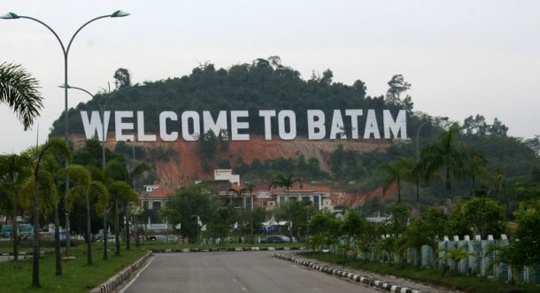

Sejarah

Pulau Batam dihuni pertama kali oleh orang melayu dengan sebutan orang selat sejak tahun 231 Masehi.
Pulau yang pernah menjadi medan perjuangan Laksamana Hang Nadim dalam melawan penjajah ini digunakan oleh
pemerintah pada dekade 1960-an sebagai basis logistik minyak bumi di Pulau Sambu.
Pulau Batam dahulunya bernama Pulau Batang. Menurut catatan sejarah, peradaban di Kota Batam sudah dimulai sejak 231 Masehi.
Geografis
Kota Batam berbatasan langsung dengan sejumlah wilayah di sekitarnya.
Sebelah utara berbatasan dengan Selat Singapura dan Singapura.
Kemudian, sebelah selatan berbatasan dengan Kabupaten Lingga.
Sebagai wilayah kepulauan, tiga pulau utama di Kota ini yaitu
Pulau Batam, Rempang, dan Galang saling terhubung oleh Jembatan Barelang.
Wisata
Batam adalah kota kecil yang memiliki banyak tempat kunjungan wisata.
Lokasinya strategis berada di tengah jalur pelayaran dan dekat dengan Malaysia juga Singapura,
membuat kota ini menjadi salah satu kota industri yang memiliki pertumbuhan paling tinggi di Indonesia.
Bukit Senyum
Bukit Senyum merupakan kawasan perbukitan yang ada di kota Batam. Dari bukit ini kamu bisa menikmati keindahan kota Singapura.
Pemandangan akan terlihat lebih indah jika dilihat pada saat malam hari, banyak pesawat datang dan pergi dari Bandara Changi.
Jembatan Barelang
Jembatan Barelang atau singkatan dari Batam, Rempang, dan Galang merupakan sebuah ikon kota Batam.
Jembatan ini memiliki fungsi utama sebagai penghubung berbagai pulau-pulau kecil di Batam seperti
pulau Tonton, pulau Nipah, pulau Galang dan Pulau Rempang. Bertujuan untuk memajukan perindustrian di kota tersebut.
Masyarakat setempat juga menyebut jembatan ini sebagai ‘Jembatan Habibie’, karena beliaulah yang memprakarsai pembangunannya,
yang mulai dibangun pada tahun 1992 dan selesai tahun 1998.